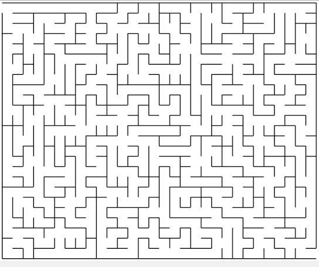

Что такое лабиринт? - Для нас это будут клетки, по которым можно перемещаться, разделённые стенками, через которые пройти нельзя.
Что такое правильный лабиринт? - Это такой лабиринт, в котором между двумя любыми клетками всегда существует единственный путь.
Обязательно ли, чтобы лабиринт был правильным? - Для некоторых алгоритмов это очень важное условие. Например, двигаясь по правилу левой руки в лабиринте с круговыми маршрутами, мы можем бесконечно ходить по одному и тому же пути. А другие алгоритмы могут работать и в неправильных лабиринтах.
Для построения пути удобно представить пространство лабиринта как двумерный массив комнат, из каждой комнаты можно или нельзя пройти в каждом из четырёх направлений.
Пусть нам нужно описать лабиринт шириной m и высотой n клеток. Нам понадобится двумерный массив (список) m*n, чтобы записать информацию про каждую клетку. Но из каждой клетки может быть четыре выхода в разных направлениях. Так что элементами этого двумерного списка будут списки из 4-х логических значений, указывающих, можно ли пройти в соседнюю клетку сверху, справа, снизу или слева. Для определённости пронумеруем направления по часовой стрелке, начиная с направления "вверх": "вверх" - 0, "вправо" - 1, "вниз" - 2, "влево" - 3. Это будут номера элементов списка дверей, выходящих из одной комнаты (True - верь открыта, проход есть, False - прохода нет.)
Если у нас уже есть программа, которая умеет строить лабиринты и записывать в текстовый файл их конфигурацию, нам нужно прочитать и декодировать этот файл, а затем представить лабиринт в удобном для нас виде (назовём полученный трёхмерный массив rooms).
Правило правой руки гласит, что если идти по правильному лабиринту, всё время касаясь стены правой рукой (или, наоборот, левой - главное, руку не менять), то обязательно обойдёшь все клетки лабиринта. И если в какой-то из них был выход (или ещё что-то, что нам надо найти), то ты его рано или поздно обязательно найдёшь.